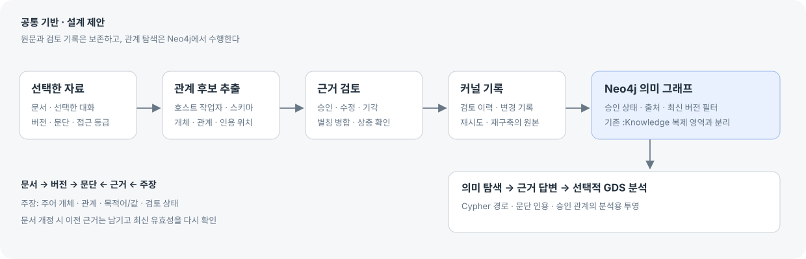

원문 근거 · 가상 예시
그래프 설계 예시.md · v2 · 8–9줄 · 예시 지문 a4e2Patchbay는 관계를 탐색할 때 Neo4j를 사용한다.
Neo4j의 데이터는 Cypher로 조회한다.
Neo4j의 데이터는 Cypher로 조회한다.
이 문장은 시안을 위해 만든 예시입니다. 실제 프로젝트 문서나 강의 인용문이 아닙니다.
제품에서는 원문 버전·줄/페이지·내용 해시를 연결하고, 원문이 바뀌면 이 근거의 유효성을 다시 확인합니다.
Neo4j 강의의 주요 흐름을 적용하는 네 가지 산출물. 공통 데이터 기반은 같고, 먼저 완성할 사용 흐름이 다릅니다.
질문·표본 → 스키마·안정 ID → 원문 버전·근거 → 후보 검토 → Neo4j 질의 순서입니다.
추천 순서는 A에서 검토 가능한 지식을 만들고 B에서 일상적으로 탐색하는 것입니다. C와 D는 답변·분석의 효용을 확인한 뒤 선택합니다.

강의는 공개 목차를 확인했습니다. 유료 영상·실습 파일은 열람하지 않았습니다. ‘검토 승인’은 근거를 확인했다는 뜻이며, 원문 주장의 진실을 자동 보증하지 않습니다. 이 화면의 조작은 새로고침하면 초기화됩니다.